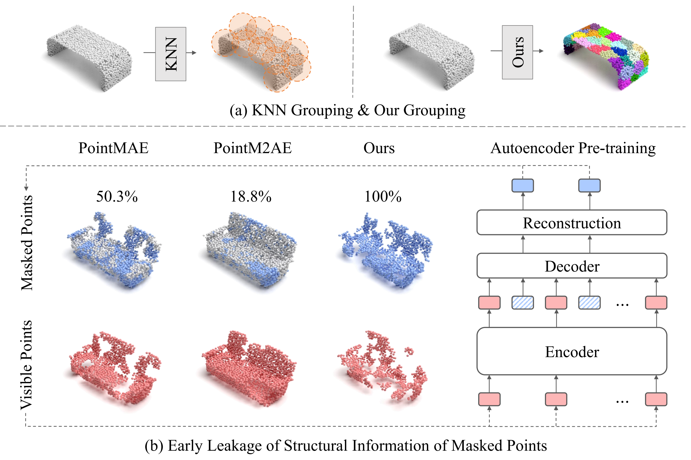
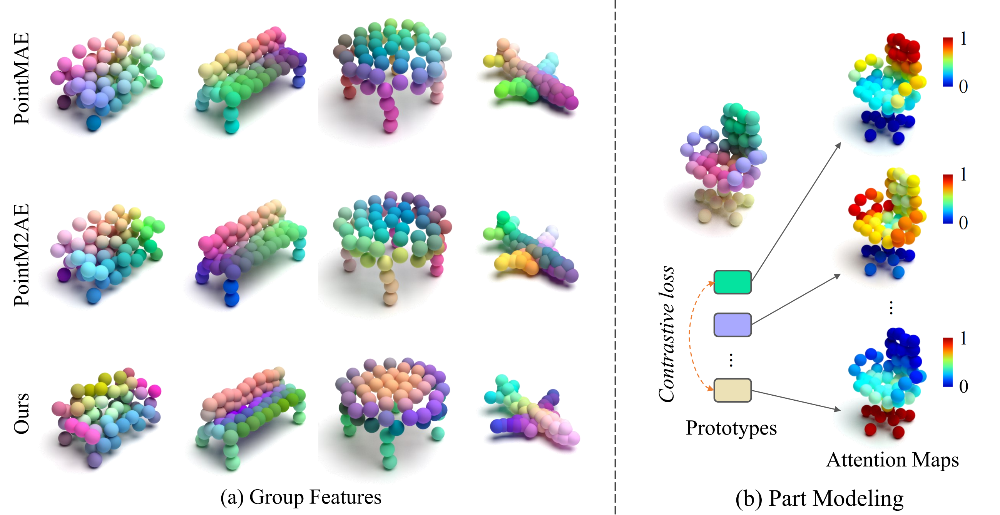
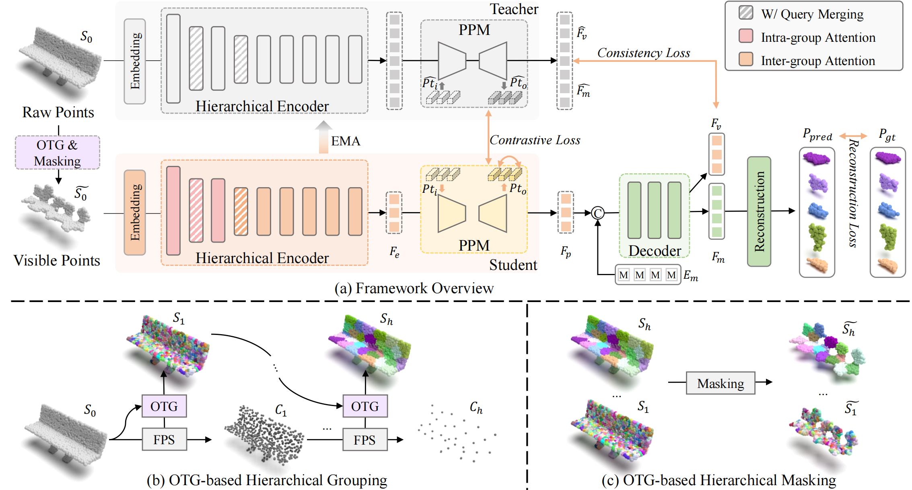
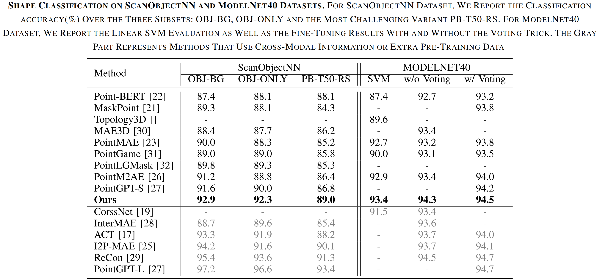
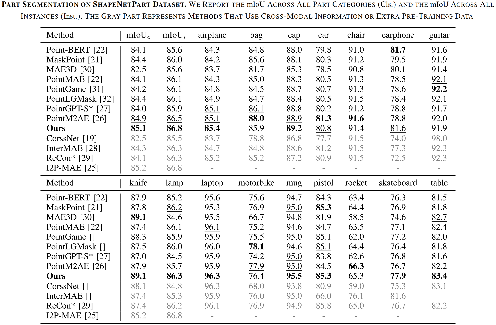

ChuXin Wang1 Yixin Zha1 Jianfeng He1 Wenfei Yang1 Tianzhu Zhang1
[Paper] [Code] [Website] [BibTeX]
Self-supervised point cloud representation learning aims to acquire robust and general feature representations from unlabeled data. Recently, masked point modeling-based methods have shown significant performance improvements for point cloud understanding, yet these methods rely on overlapping grouping strategies (k-nearest neighbor algorithm) resulting in early leakage of structural information of mask groups, and overlook the semantic modeling of object components resulting in parts with the same semantics having obvious feature differences due to position differences. In this work, we rethink grouping strategies and pretext tasks that are more suitable for self-supervised point cloud representation learning and propose a novel hierarchical masked representation learning method, including an optimal transport-based hierarchical grouping strategy, a prototype-based part modeling module, and a hierarchical attention encoder. The proposed method enjoys several merits. First, the proposed grouping strategy partitions the point cloud into non-overlapping groups, eliminating the early leakage of structural information in the masked groups. Second, the proposed prototype-based part modeling module dynamically models different object components, ensuring feature consistency on parts with the same semantics. Extensive experiments on four downstream tasks demonstrate that our method surpasses state-of-the-art 3D representation learning methods. Comprehensive ablation studies and visualizations demonstrate the effectiveness of the proposed modules.
|

|
(1) Early leakage of structural information of mask groups. Existing MPM-based methods usually utilize the KNN algorithm to group point clouds, leading to overlap between masked and visible groups. When inputting points from the visible groups, masked points in the overlapping areas are also input into the encoder. As shown in the Figure, Both PointMAE and PointM2AE involve a substantial number of masked points being input into the encoder along with visible points. However, these masked points contain rich structural information. The leakage of structural information to the encoder simplifies the local shape prediction task for mask groups in the decoder, thereby diminishing the effectiveness of the pre-text task in pre-training. |
|

|
(2) Lack of modeling on semantic information of object parts. The MPM-based methods obtain fine-grained local features by inferring the structure of masked groups. However, the obtained features exhibit significant positional dependency and lack semantic modeling of different object parts. As shown in the Figure, Parts with the same semantics have obvious feature differences due to position differences, such as wings, chair armrests, and tops of desk lamps. Parts with the same semantics have obvious feature differences due to position differences, such as wings, chair armrests, and tops of desk lamps. Cross-modal methods solve this problem with pre-trained image or language models, which require massive amounts of data and large computational costs. |

The object of this work is to extract diverse information from point clouds in a self-supervised manner, including structural and semantic features, for complex 3D computer vision tasks. Figure 3(a) illustrates the pipeline of our approach. Generally, given an input point cloud S0, we utilize an optimal transport-based hierarchical grouping strategy to divide it into non-overlapping groups at different scales. Then, we randomly select a portion of these groups as the masked groups, while the remaining groups have all their points S̃0 encoded through a point embedding module and fed into the proposed hierarchical encoder. Note that the hierarchical encoder consists of several intra-group attention layers and inter-group attention layers. The intra-group attention layer models the local structure within each group, while the inter-group attention layer captures relationships across groups. After encoding by the hierarchical encoder, the group features Fe are input into the prototype-based part modeling module. We design a set of learnable part-aware prototypes Pti, which adapt to the current object component shapes through cross-attention mechanisms. Subsequently, we use a prototype-based adapter to enhance the group features Fp, which will be described in detail later. The enhanced group features Fp, along with position encodings Em of the central points of the masked region, are then input into the decoder. The output features Fm are used to predict the local structure Ppred of the masked groups. Finally, we use three kinds of losses to guide model pre-training:
 
(1) We propose a new single-modal hierarchical mask autoencoder to solve two problems in the MPM-based method: early leakage of structural information of mask groups and lack of modeling on semantic information of object parts.
(2) We design an OTG-based hierarchical grouping method, a PPM module, and a hierarchical encoder. The OTG-based hierarchical grouping method partitions the point cloud into non-overlapping groups while maintaining consistency between point cloud groups across different scales. The PPM module dynamically models different object components, ensuring feature consistency on parts with the same semantics. Additionally, the hierarchical encoder effectively models the relationship between local and global 3D shapes.
(3) Our method attains state-of-the-art performance on various downstream tasks, such as a 2.07% accuracy improvement on the ScanObjectNN dataset. Extensive and comprehensive ablation experiments and visualizations verify the superiority of the proposed modules.
|
|
Last update: March 17, 2025